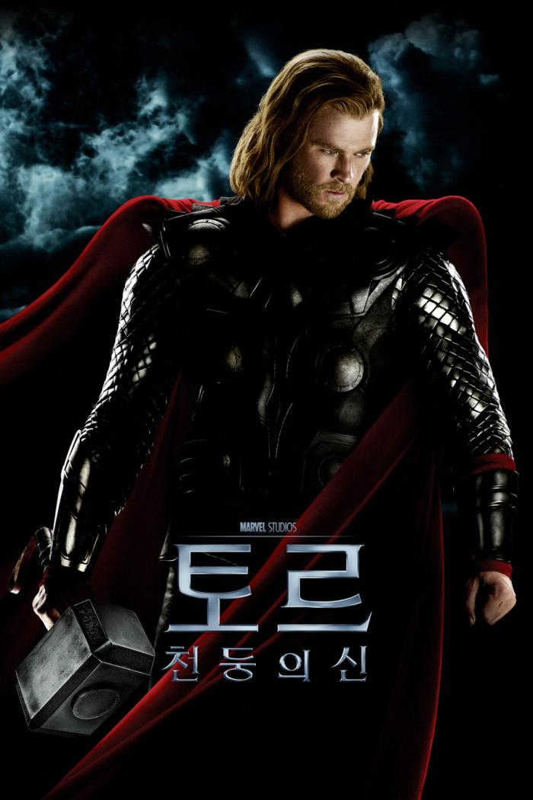

토르의 이름은 페로 제도의 중심 항구 등 그가 자주 다니던 여러 장소와 그의 자손이라 주장하는 가문의 이름이 되었다. 그런 이름들이 아직도 남아 있는데, 잉글랜드 서리 주의 선더힐(Thunderhill)이나 소르번(Thorburn), 토르발트젠(Thorwaldsen) 등이 그것이다. 하지만 가장 두드러진 이름은 역시 요일 중 토르의 날(Thor's day), 목요일(Thursday)일 것이다. 1.3. 특징
신화가 성립될 당시나 지금이나 북유럽 신화에서 가장 인기 있는 신으로, 게르만 종교에서는 오딘과 최고신의 자리를 다투었다. 그리고 외모가 미남이었는지는 알수없다만 토르의 머릿색은 금보다도 곱다는 서술이 나오기에[6] 머리빨 하나는 끝내주었을듯. 오딘 신앙은 인기 있는 지역도, 없는 지역도 있었으나, 토르 신앙은 지역이나 계층에 관계 없이 두루 인기가 높았다. 어느 시점에서 노르웨이에서는 오딘 신앙이 거의 힘을 잃었고, 따라서 토르가 사실상 최고신이 될 수 있었다. 노르웨이 사람들이 건너간 아이슬란드에서도 자연히 토르가 최고신으로 자리매김하였다. 그러나 서게르만족들 사이에서는 오딘이 확고한 최고신이었다.[7] 게다가 노르웨이나 아이슬란드에서도 계층별 차이가 있어서, 시인들과 전사 계층에서는 오딘 신앙이 전해지고, 또 나름대로 인기가 있었다. 그러니 토르와 오딘 중 누가 최고신인지는 시대별, 지역별, 계층별 차이가 있다고 설명해야 합당하다. 후대에 체계화되고 문서화된 북유럽 신화는 아이슬란드 시인들의 자료가 주된 원천이기도 하고 북유럽 외의 타지역에선 농민계층이 아닌 전사계층인 바이킹의 임팩트 때문인지, 오딘이 최고신이 되었고 토르는 그 아들로 자리매김하였다. 계층별로 설명한다면, 오딘은 전사들, 그리고 역사 전승자 역할을 겸하는 시인들에게 인기가 있었고[8], 토르는 서민들에게는 인기가 있었다.[9] 토르에 대해서 오딘의 아들이라거나 동생이라는 전승이 많은데, 오딘의 신격 강화를 위해 원래는 남남이었던 토르를 아들로 격하했다는 학설도 있다. 실제로 오딘이 아닌 다른 부모 신(대지의 여신 표르긴)의 이름이 언급되는 전승도 있다. 그리고 둘이 함께 나오는 에피소드 중에는 오딘이 싸움을 거는 경우도 있고, 발두르에 비하면 부자간의 제대로 된 대화도 거의 없다. 그리스 신화와 각 신들간 포지션 비교를 하면 꽤나 웃긴 일이 벌어지는데, 토르는 그리스 신화에서 제우스도 되었다가 포세이돈도 되었다가 헤라클레스도 되었다가 데메테르도 되었다가 디오니소스도 되었다가 아폴론도 되었다가 하는 등 이것저것 다 해보는 포지션이 된다. 북유럽 신화의 프레이야와 그리스 신화의 아프로디테나 북유럽 신화의 헬과 그리스 신화의 하데스가 완벽하게 일치하는 것과 대조된다.